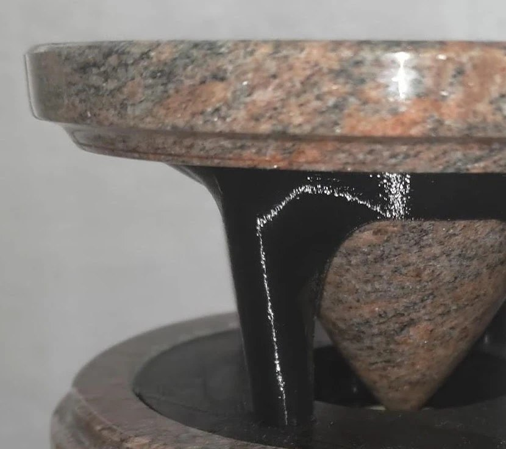
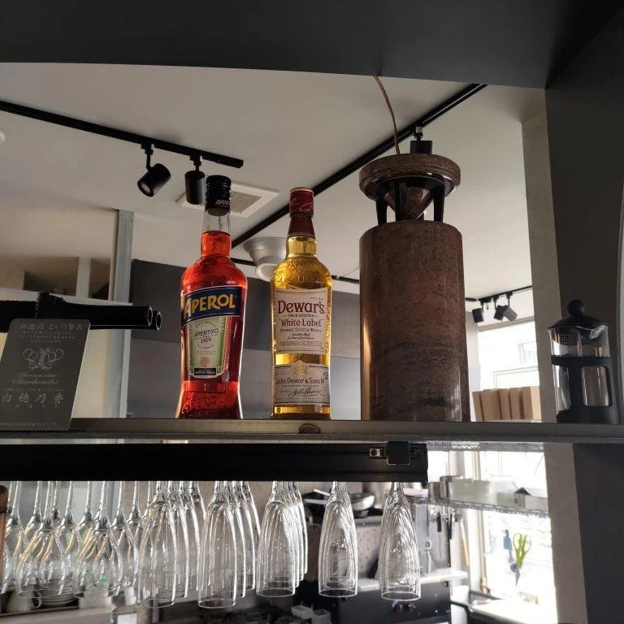
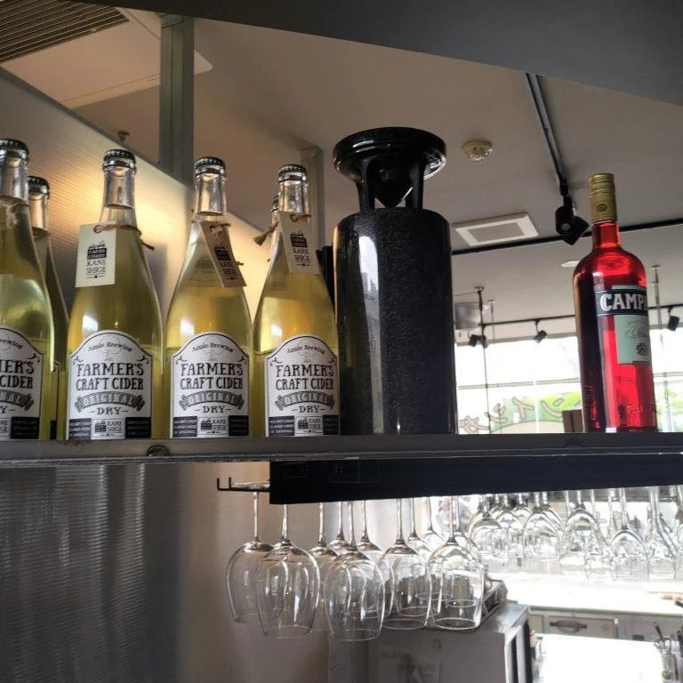
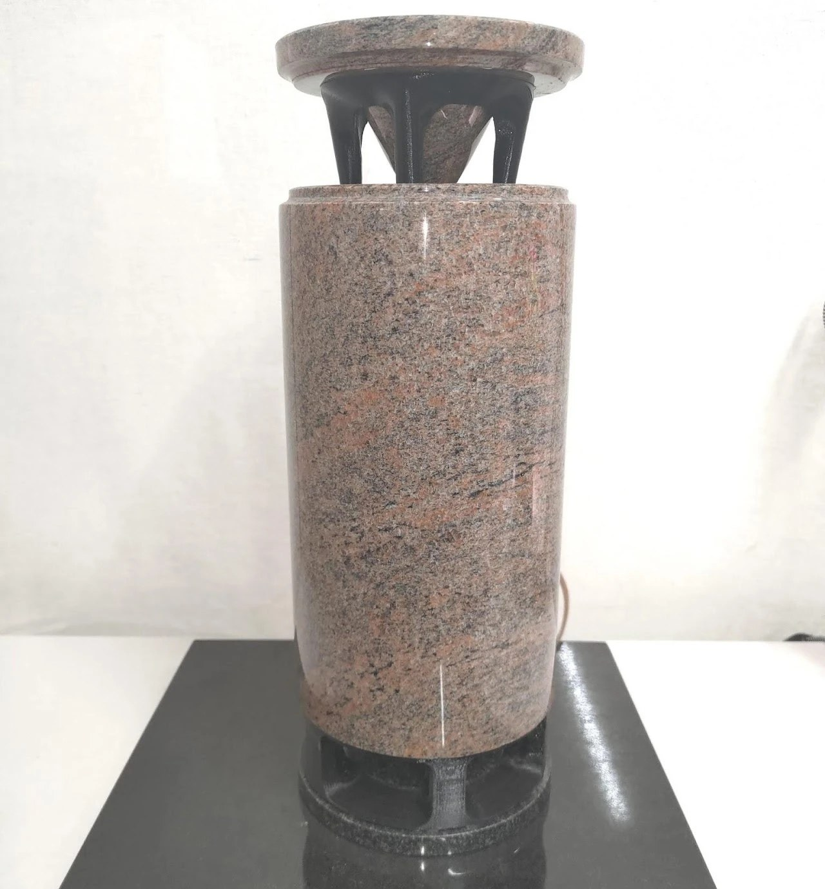
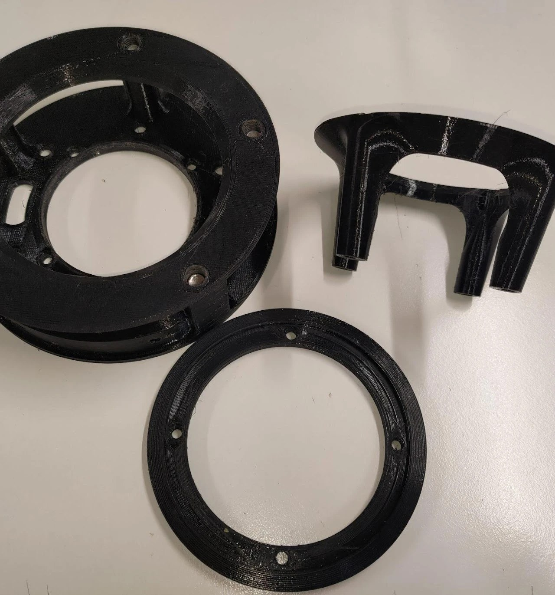
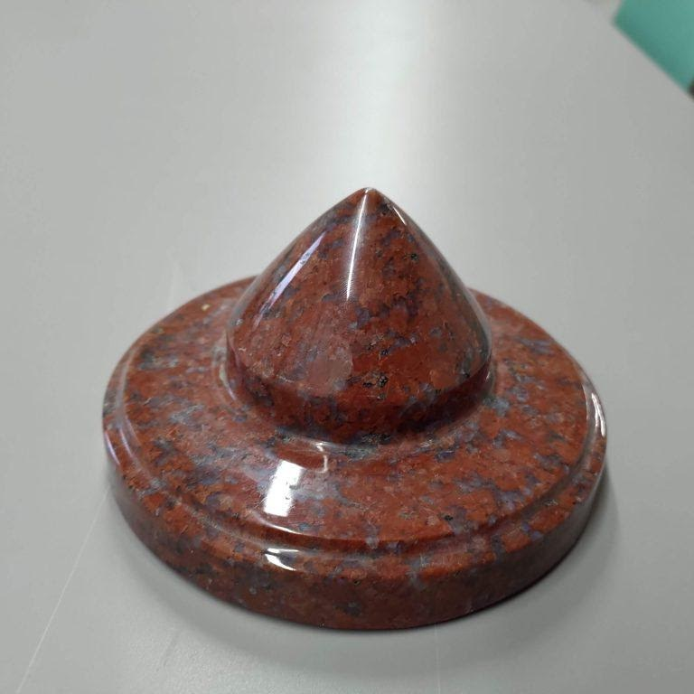
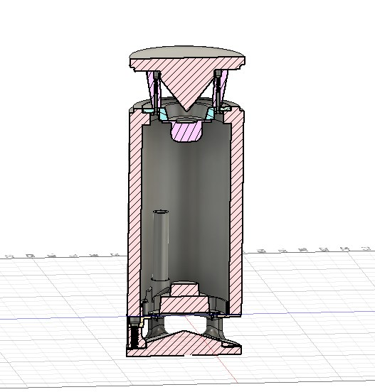

石の
スピーカー
硬く、重く、響く。
石という素材で、音をつくる。

石で、スピーカーを
つくったら。
スピーカーの箱（エンクロージャー）は、木、プラスチックなど、さまざまな素材で作られています。素材の違いは、そのまま音の違いに表れます。
温かみのある音
木の繊維がほどよく響きを帯び、まろやかで耳なじみのよい音色をつくります。
クリアな音質
低音域はよく出る一方、高音域の表現力には少しもの足りなさが残ることも。
硬く、重く、振動を逃がさない天然石。その素材だからこそ届けられる、独特な響きを引き出すこと。庄司石材店が取り組む、新しいスピーカーづくりのテーマです。
3 つの、石のスピーカー。


無指向性スピーカー、
フルレンジ 1 基。

上部に、1 基。
上部にフルレンジスピーカーを 1 基設置した、シンプルな構成。自然な音の広がりを体感できます。
前後左右、どの方向にも同じ音質で包み込まれるため、音楽の中にいるような一体感を味わえます。

天井からの反射音まで、音場に。
天井から返ってくる反射音が、さらに自然な響きを加え、奥行きのある音像をつくります。スピーカーの存在を感じさせない音場設計で、音楽が空間全体に溶け込みます。
2 ユニット構成へ、
進化する音場。

高音と中低音を、わけて。
前作のフルレンジ 1 基は、高い天井で小さめの音量で鳴らす場合、音の広がりと低音の表現に課題が残りました。
そこで、音響特性を考慮した 2 つのユニット構成へ。上部には高音域に特化したトゥイーター、下部には中低音域を担うフルレンジを配置。より自然で、バランスのとれた音質を実現しました。
高い天井でも音がしっかり広がり、小音量でも豊かな低音を楽しめます。
立体的な音場
上下にユニットを配することで、前後左右だけでなく、上下方向にも音が広がります。音楽に包み込まれる感覚を生みます。
自然な反射音
壁・天井・床からの反射音を取り込むことで、より自然な音の広がりに。コンサートホールにいるような臨場感です。
振動スピーカー。

石そのものを、鳴らす。
箱で音を響かせるのではなく、石自体に振動を伝えて鳴らす――石の質量と密度がそのまま音色になる、新しいアプローチです。

3D プリンターによる部品。
石では難しい複雑な内部形状を、3D プリンターで樹脂成形。石とユニットを結ぶ、要となる部品です。

ツィータ部。
高音域を担うツィータ部分。石の硬質な響きと、繊細な高音表現を両立させる、組み合わせの要です。
六方石スピーカー。
卓上に、ひとつ。

自然と調和する、デザイン。
六角柱に近いかたちで生まれる「六方石」。その天然の質感や輪郭をそのまま活かし、ひとつとして同じものがないスピーカーが出来上がります。
一つひとつ、模様や色合いが異なります。シンプルかつユニークな佇まいが、お部屋のインテリアにも自然に溶け込みます。

職人の手で、ひとつずつ。
当社の工房にて、職人の手で一台ずつ作っています。石の持つ自然な響きを最大限に引き出すために 3D CAD で設計し、石では難しい細かな部品は 3D プリンターで内製しています。
1.5 インチのフルレンジに、低音を補うパッシブラジエーターを組み合わせ、卓上サイズでも音の厚みを実現しました。
仕様 — Specifications
- Size 15 cm × 15 cm × 12 cm卓上に置けるコンパクトサイズ。
- Weight 4 〜 5 kg天然石ならではの、しっかりとした重み。
- Driver 2.5 インチ フルレンジ / 4 Ω低音はパッシブラジエーターで補強。
- Notes アンプは付属しません※天然石の特性上、色味や模様に個体差があります。ご了承ください。
自社で、設計から仕上げまで。

3D CAD による設計。
卓上スピーカーでありながら、六方石の石柱の美しさを損なわないデザインを目指して、3D CAD 上で繰り返し設計します。
上面には 1.5 インチのフルレンジ、底面にはパッシブラジエーターを配置。石とユニットを収める樹脂パーツは、0.1 mm 単位で精密に設計しています。

自社で、穴を開ける。
石材店の本業である石加工の技術をそのまま活かし、ユニットを取り付ける穴を、自社で 1 つずつ加工していきます。

3D プリンターで、内製。
石では再現できない複雑な内部部品は、3D プリンターで成形。設計から仕上げまで、すべての工程を自社で完結させます。